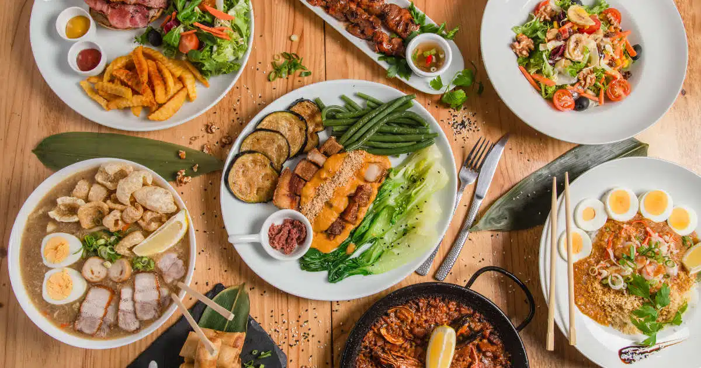
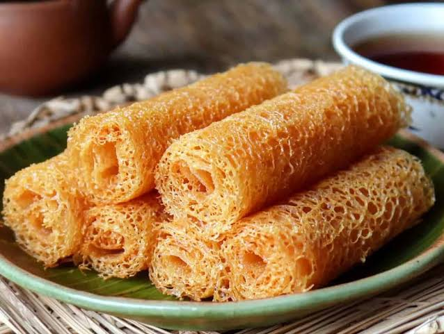
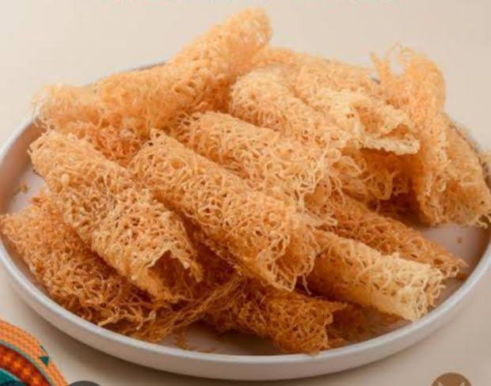
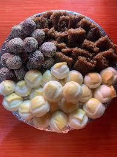
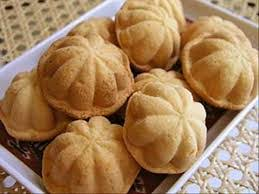
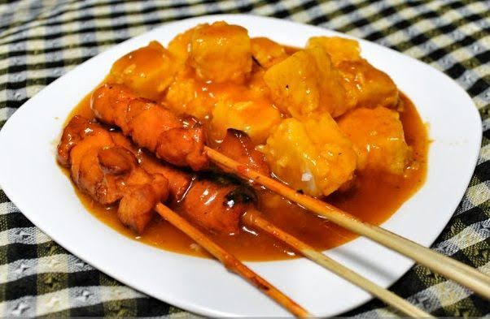

Authentic flavors from different municipalities

Known for lokot-lokot, baulo, and other sweet treats made from rice flour.

Famous for "Tinagtag," a crispy rice flour delicacy, and "Bulwa," their version of muffins.

Seafood, rice cakes, and Tausug-inspired cuisine highlight Labangan’s local flavors.

Popular for Zamboanga-style treats like lokot-lokot (Zambo rolls) and baulo.

Known for Satti, a grilled meat dish with a sweet and spicy sauce.